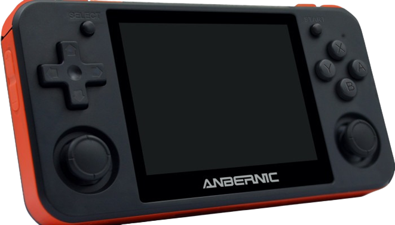
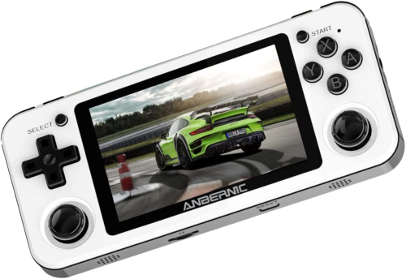
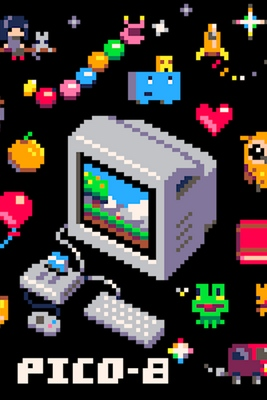
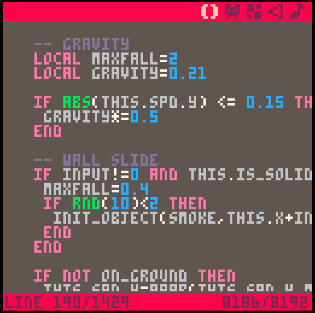
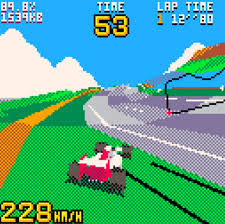
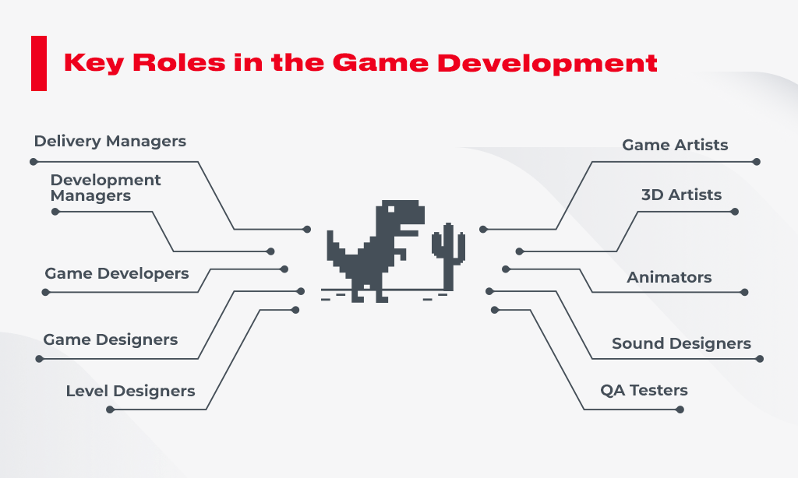

Best thing to get your hand on!
Anbernic is known to have the best handheld emulators in the buisiness. We took it to the next level due to our innovative design and new software blowing every other emulator out of the water. Buying a Pico Pocket can also include a 2-year warrenty and special tools allowing engineers and not so engineers to customize and tune up their devices.
What is the Pico Pocket?
The Pico Pocket developed by Anbernic is a handheld device that specializes in running Pico-8 games. This device runs with 1 TB of space and can also emulate and run games from other hardware such as xbox one, Playstation 1-4, GBA, Nintendo Switch, and more!
What is pico 8?
PICO-8 is a virtual machine and game engine created by Lexaloffle Games. It is a fantasy video game console that mimics the limited graphical and sound capabilities of 8-bit systems of the 1980s. The goal of this is to encourage creativity and ingenuity in producing games without being overwhelmed with the many possibilities of modern tools and machines. Such a design also allows PICO-8 games to have a familiar look and feel. Coding on the PICO-8 is accomplished through a Lua-based environment, in which users can create music, sound effects, sprites, maps, and games. Users are able to export their games as HTML5 web games or upload their creations to Lexaloffle's official BBS where other users are able to play the games in a web browser, and view the source code. PICO-8 games can also be exported as executable programs, which will run on Windows, macOS, or Linux. Notable games released for the system include the original version of Celeste, which was created in four days as part of a game jam. 
How we made the change?
The Pico Pocket is a special device that can connect to wireless keyboards for lua based coding on the Pico-8 platform. For multiplayer games the pico pocket can make local connections to other near devices to allow multiplayer and screen display on other devices wirelessly. Pico pocket also has an easy access to Itch.io, the market place and sharing lobby for Pico developers. If you wanted to go retro, this is the best way to go with pico pocket.
Other capabilities
Other capabilities are available, after all this device is still an emulator. YOu can player your favorite games ranging from consoles from the Atari and the GBA to the xbox 360 and Playstation 2. The device also works as a mp3 and mp4 player for when the wifi goes out. The Pico Pocket is tied with Parsec software which allows players to play their favorite games online as if they were right next to them on the couch.
Creative Options
When it comes to game design there are many moving parts and things the need to be refined to near perfection. With such a task new programs, engines and tools were made in support of creators. We as a Buisness want to give the best expericence and chance to produce and play hgigh quality games. That means we provide creators with the tools needed to accomplish their goals. This includes Aseprite the biggest sprite art system, Google drive a free and large cloud server system to store projects, and Github repositories to develop together with teams.
Creators can also be endorsed in our in console shop to feature their games to all who desire fun in gaming. This ties with the social system allowing you to join groups and link with friends. After all, gaming,developing, and having fun isn't the easiest alone.Pico Pocket works off some of the most common parts forund in the streams of the internet, allowing user to customize and improve their devices if they choose so.
Social Accounts
What's technology without a little social media? Users of the Pico Pocket are free to make an account to make it easier to connect with friends and create. Your account can hold details such as games you created, your favorite games to play, and even the achievments you gained. You can sutomize your background and Profile picture to make and imprint on your device making it, well, yours.

With the social links there will be a online loby known as pico park. This will allow users to connect in groups and send messages to each other. You can also see art other posted publically and give them feedback. These parks are closely monitored to keep the safety of the users on the program.Social Media Examiner put together a report that surveyed over 2,500 marketers about their businesses' social media marketing efforts. With 83% of those surveyed placing a high value on social media, it is clear that social media marketing works. Being active on social media has the clear benefits of increasing inbound traffic, but once customers land on your site, how do you re-utilize your social media marketing efforts to increase conversions? This is where a social hub can come into play. Social hubs allow you to: Target your website audience with your social media marketing. Your website audience is the most likely to be the one purchasing or learning about your brand, and a social hub can bring the marketing effort put into social media back onto the website. Make the most of each post. A social hub allows a brand to re-utilize the content they post on each social network to the maximum benefit, to reach the users most interested in their brand (the ones landing directly on their website) Build trust. Brands that are active on social media are more trusted because their active presence indicates legitimacy. A social hub showcases this activity where it matters most. Increase engagement. By aggregating and showcasing social media content, a social hub can create more opportunities for a customer to interact with a brand, whether it be through a retweet, or a shared Facebook post. Increase sales. The cumulative effect of the above is to increase conversions and improve brand performance when it comes to sales.
Tools Available
Accessibility
The Pico Pocket is all about creative implementation, so we have audio ports for sweet listen ins'. There is a usb port on the device for coding and storage use allowing you to store more code, art, games, etc. More features and settings are available. For example, a text-to-speech feature may read text out loud for people with limited vision, while a speech-recognition feature allows users with limited mobility to control the computer with their voice.
Licensing
All content created falls under arts meaning we DO NOT tolerate plagerism. It's ok to create with a twist but plain out copying is a crime. All content our creators make is protected and can and will be reported. We as a a company will follow our job as cleaning the community with our moderation team to keep a clean open place for creators. All rights reserved under plagerismand trademark. All offenses will lead to appropriate legal pursuit and justice.
Review
Guy Freak Dude
12 sec ago
Personally I've been a pc guy my whole life. It brought me back to my childhood running the gameboy in the back seat of a road trip and playing pokemon red. Five stars.
Look at product
Review
Jerry Beans Man
Nov 11
I've never seen a more ingenious device for game deveolpment and playing with friends. The ability to take such nostalgic gameplay anyware is pure wow factor. Five stars from me
Look at product